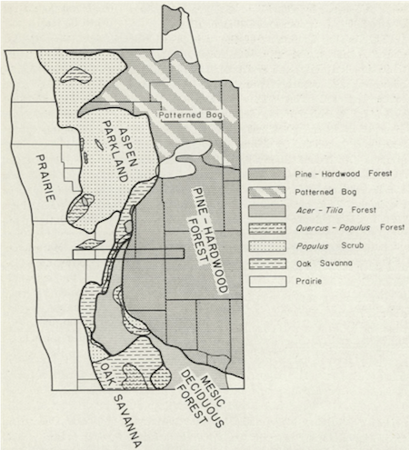

§ Literature Review
Scientists have performed extensive research to understand past changes in the climate and vegetation in Northern Minnesota during the Holocene. However, more research needs to consider the relationship between soils and vegetation in this region. McAndrews’ (1966) research on the Northwestern Minnesota vegetation and their retaliation to the post-glaciation climate is one of the earlier work reveals the vegetation dynamics in this unique prairie-forest transition region. His study area, the Itasca Transect overlapped with Polk County in our research area, in addition to two other counties, Mahnomen County, and Clearwater County. Combined with the large-scale climate changes post-glaciation, the vegetation distribution in this transitional region has become more unstable and more dynamic (McAndrews, 1966). As he denoted, the grand scale climate change post-glaciation is a warming trend, and this resulted in the succession of the prairie vegetation in the West and forest vegetation in the East, with no predominant transitional savanna openings between prairie and forest. From the reconstruction of past vegetation distribution patterns with pollen data combining with the bearing tree records from the land surveying period in the 1870s, he stated that the vegetation patterns post-glaciation was analogous to that of before the Euro-American settlements. However, this pattern was not stable, variation in climate could lead to vegetation community expansion and retraction. He also discussed the roles that other factors, such as soil textures and fire frequency, played in influencing vegetation, such as the reduced fire frequency in wetter and cooler climate leads to forest expansion during the Little Ice Age. However, no identification of soil orders (Alfisols or Mollisols) was used to establish a clear relation between vegetation and soils. McAndrews mainly focused on identifying that vegetation, soils textures, and fire frequency are largely changed as climate changed, which laid a good foundation for our study (1966). Additionally, McAndrews (1966) also stated that the Euro-American settlement changed the land and vegetation in a large spatial extent and also with a drastic influence. He suggested that the land use varied on different vegetation: “(they) altered the Prairie by cultivation and the Forest and Savanna by logging, reducing the fire frequency, and cultivation” (McAndrews, 1966). These all laid evidence for our studying the patterns of Euro-Americans’ impact on vegetation through settlement.
Fig.1 Generalized map of the formations and community types of the natural vegetation of northwestern Minnesota about 1875 (adapted from Marschner, 1930). The Itasca transect, the rectangle in the center, is 66 miles long and 6 miles wide.
Based on McAndrews’ classic work, Nelson and Hu (2008) revisited this prairie-forest ecotone with more precise temporal resolution. In their study they also emphasized the point that McAndrews (1966) made about the high spatial and temporal variability of vegetation communities in this region and that fires, which strongly relate to climate in the Holocene before heavy human settlement, play an important role in the vegetation variability; however, Nelson and Hu (2008) emphasized that that fire occurrence was highly relevant to fuel availability and fuel moisture and vegetation threshold. From their analysis of Charcoal accumulation rates (CHARs) in relation to prairie vegetation abundance from pollen assemblage, they concluded that during the Holocene, pervasive high moisture content led to low fire occurrence in general which in turn indicated that during this time, the prairie expansion and contractions was not related to fire regime; rather, aridity had a stronger linkage to vegetation communities (Nelson and Hu, 2008). During the mid-Holocene, the climate was generally considered to be warmer and more arid, more herbaceous vegetation, or the prairie taxa expanded Westward. Woody vegetation was also more common when the overall moisture was high. As a conclusion, Nelson and Hu stated the late-Holocene droughts were milder than the mid-Holocene aridity, in terms of impacting the large-scale vegetation distribution, but it was crucial to understand the roles Anthropogenic activities have in droughts and vegetation (2008).
Umbanhowar’s study looked even more closely at the role fire played in the interaction of fire, vegetation and climate by analyzing charcoals trapped in lake sediments in the Minnesota Big Woods region, which partially overlapped with the prairie-forest transition region (2004). Through analyzing the spatial and temporal abundance of charcoals, combined with the past pollen studies done by other scientists, he has brought to attention the ambiguity lies within the orders whether climate change first led to change in vegetation (fuel abundance) then changes the fire frequency, or the changes in climate alters the natural fire regime, thus lead vegetation abundance to change in response to the fire occurrence altering. Umbanhowar inclined more towards the second possibility, as he suggested through his charcoal analysis, the rise in oak pollen and coincident decrease in grass pollen were observed after the regional decline in charcoals in the cooler and moister climatic environment during the 16th and 17th century. Therefore, during the past 1000 years, woodland was predominant, expanding into prairie regions. Nevertheless, he also made note that the past two-hundred-year human settlement could complex these relationships through changing the regional climate or the fire regime changes due to anthropogenic activities.
In addition to climate’s role in impacting fire regime and vegetation pattern, soils have also been identified as an important factor. From analyzing witness tree data recorded in the 19th century Public Land Survey, Grimm (1984) reconstructed the vegetation distribution in the Big Woods region in South-central Minnesota before large-scale settlement. His study identified that long-term change in fire regime had a greater influence on vegetation, but soil properties, such as soil drainage, soil properties, and Alfisols-Mollisols biosequence, have a fundamental influence on fire-probability. In his study, he identified that the Alfisols-Mollisols biosequence affects the vegetation communities both historically and functionally. Historically, even though the new vegetation community has invaded an area, the soils underneath could still preserve the properties from the previous predominant vegetation, indicating soil’s delayed response to vegetation change. One example of the change in vegetation development is associated with the fire occurrence and its relation with soils (Grimm, 1984). Soils influence vegetation distribution due to the reserved fire occurrence tendency. Soils developed under fire-tolerant forest vegetation tend to have lower fire occurrence tendency, so this property will be preserved by the soils which will affect the fire tolerance of the successive vegetation (Grimm, 1984).
Goring et al. (2015) further studied the dynamics of vegetation patterns in the Midwestern U.S. from the Euro-American settlement period to present. They pointed out the importance of forest composition change by using the PLSS data. Through calculating the stem density to biomass ratio which incorporates both the tree size and stockings, they found that in Northern Minnesota post-settlement, the forest tends to be younger with small-diameter trees; the stands are also even-aged. Goring et al pointed out that these phenomena could contribute to the frequent stand-replacing fire disturbance or poor soil conditions accompanied by settlement activities. By using FIA (Forest Inventory Analysis) and PLSS, Goring et al contrasted the transects in the ecotone regions, and found that there have been significant changes to the ecotone structures from the pre-settlement to modern time, with higher heterogeneous forest composition and steeper ecotones in the pre-settlement era and more diffused ecotones present (2015). They suggested that the land-use changes are a crucial point for “resetting” the forest successive clock, thus are responsible for changes in regional ecotone composition, climate, potentially soil, and other geophysical properties to a certain extent. Beyond, they concluded from their analysis of Minnesota, Wisconsin and Northern Michigan that 28% of the regional forest cover is novel comparing to the forest in two centuries ago prior to Euro-American settlement, which again indicates a significant change in a very short time (Goring et al., 2015). These scientific milestones all have strived to uncover the interactions between the Midwestern natural environment and Euro-American settlement through extensive studies of the key factors and their interactions, such as fire, soil, vegetation and human land-use activities. Multiple of these studies also prove that using Public Land Survey data is valid for reconstructing the vegetation conditions from the pre-settlement time. These efforts already provide crucial fundamentals for reconstructing the climate and vegetation history in this region. In order to establish a complete picture of the relationships among these factors, another piece of puzzle is still missing, that is the dynamic relationship between soils and vegetation in the transitional region, as well as the role Euro-American settlement played in complicating this relationship. Therefore, we need to understand what kinds of soils and natural vegetation were mainly impacted by Euro-American settlement or even what soils are preferred (consciously and unconsciously chosen) for Euro-American settlement to be able to analyze how land use change affected soils and soil properties, including soil fire probability and carbon storage, for future studies. Filling these gaps will be fundamental to land management decision making, as well as for future studies of carbon loss through agricultural land use and climate change in relation to human activities.